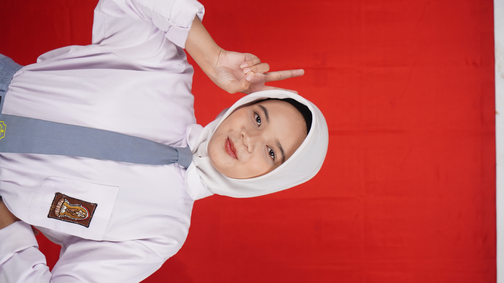

website profile sederhana menggunakan html dan css

nama:luna winky s.
kelas:XII tkj
Alamat:Bekasi
cita cita:CEO
hallo,nama saya luna winky, saya sedang belajar membuat website menggunakan HTML. saya ingin menguasai pemrograman web agar bisa membuat website yang menarik dan bermanfaat bagi banyak orang.
""Kuat hadapi rintangan, terus bersinar di setiap kesempatan." — JASPER —"
email: winkysantosoluna@gmail.com
© 2026 — Folder Pertama Saya. All Rights Reserved.